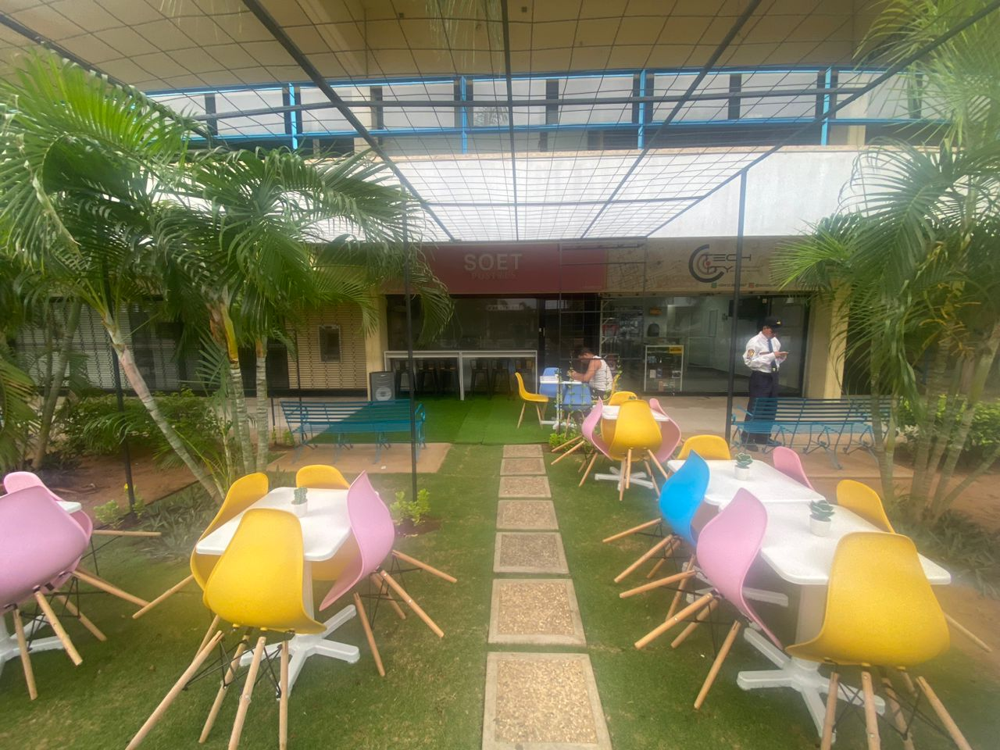

Origen
Dos apasionados emprendedores y amantes de la repostería llamados Julieth Valbuena y Jesús Chacín, compartían un sueño en común: deleitar a las personas con deliciosas donas artesanales. Decidieron convertir su modesta casa en el epicentro de su negocio de donas, llenando el ambiente con aromas dulces y creaciones irresistibles. Ellos se sumergieron en el arte de la repostería, perfeccionando sus técnicas y experimentando con una amplia variedad de sabores y diseños únicos. Su reputación comenzó a crecer rápidamente en la comunidad local, y pronto sus donas se convirtieron en una sensación en las redes sociales. A medida que la demanda aumentaba, se enfrentaron al desafío de cumplir con los pedidos y mantener la calidad que los había convertido en referentes en el mundo de las donas. Fue entonces cuando descubrieron el concepto de "dark kitchen", una forma innovadora de operar sin una tienda física tradicional.
Emocionados por esta nueva posibilidad, transformaron su cocina en un espacio profesional completamente equipado. Instalaron hornos de alta tecnología, mesas de trabajo espaciosas y herramientas especializadas para hacer de su hogar una auténtica fábrica de donas. El boca a boca hizo que la popularidad de sus donas creciera de manera exponencial. Sin embargo, Julieth y Jesús tenían una visión aún más audaz: llevar sus deliciosas creaciones directamente a los amantes de las donas en lugares inesperados.
En medio de su apasionada búsqueda por llevar su negocio de donas a nuevas alturas, Julieth y Jesús se encontraron con un viejo Volkswagen Super Escarabajo del año 1973. A simple vista, el automóvil estaba en un estado desastroso, pero vieron en él un potencial único. Decidieron darle una nueva vida y convertirlo en el vehículo emblemático de su negocio. Así comenzó la travesía de remodelación de "Volky". Julieth y Jesús se embarcaron en la tarea de devolverle su esplendor a "Volky". Poco a poco, dedicaron horas interminables para reparar su motor, renovar su chasis y pulir su carrocería desgastada. La paciencia y el amor que le dedicaron a su querido Volkswagen eran evidentes en cada detalle. Cuando finalmente terminaron a "Volky", se había transformado por completo. Ahora lucía un brillante color celeste que resaltaba en las calles, atrayendo miradas curiosas y despertando la emoción de aquellos que lo veían.
Era una verdadera joya en movimiento, un reflejo del espíritu emprendedor y la determinación. En el techo de "Volky" colocaron una dona gigante llamativa, con colores vivos que anunciaban la llegada de las deliciosas creaciones de "Soet Postres". Además, instalaron con cuidado un exhibidor de donas en el capó delantero, donde exhibían su variedad de sabores y diseños tentadores. "Volky" se convirtió en un símbolo de su pasión y dedicación por llevar alegría a través de sus donas. El nuevo aspecto de "Volky" generó una gran expectativa en la comunidad. Las personas se acercaban emocionadas, admirando la transformación del querido escarabajo y deseando probar las delicias que ofrecían. Cada vez que "Volky" aparecía en un nuevo lugar, las donas volaban de su exhibidor y la reputación de Soet Postres seguía creciendo.
La historia de "Volky" demostraba que incluso algo que parece estar en ruinas puede renacer con amor, dedicación y una visión clara. En este encontraron una oportunidad para hacer realidad su sueño de llevar sus donas a todos los rincones de la ciudad. "Volky" se convirtió en un símbolo de su espíritu emprendedor y una parte inseparable de la historia de "Soet Postres".
Tipos de postres
Donas

Nuestra variedad de sabores te sorprenderá y te dejará con ganas de más. Imagina morder una dona esponjosa y descubrir un relleno delicioso en su interior. En Soet Postres, te ofrecemos ocho opciones de relleno para que elijas tu favorito. Desde la clásica Nutella y el rico chocolate, hasta el dulce sabor del arequipe y la suavidad de la crema pastelera. También podrás disfrutar del exquisito chocolate blanco, el frosting de queso crema y la refrescante crema de pie de limón. Pero eso no es todo, nuestras donas también están adornadas con una amplia variedad de toppings predeterminados. Cada dona será una explosión de sabor y textura en cada bocado. Nuestras donas son frescas, hechas con ingredientes de primera calidad y con un toque de dedicación artesanal en cada paso del proceso.
Cups
Adicional a esto, tenemos los cups, una forma de reinventar la manera de disfrutar de nuestras deliciosas tortas con nuestras irresistibles porciones en vasos plásticos con domos, que cariñosamente llamamos "cups". Imagina una combinación perfecta de sabores y texturas: una suave y húmeda torta de chocolate, generosamente rellena de la irresistible nutella. Y para llevarlo al siguiente nivel, añadimos un topping de tu elección: ya sea el crujiente Pirulín, el lujoso Ferrero Rocher o el clásico Oreo. Nuestras porciones en cups no solo son una delicia para el paladar, sino también un deleite para la vista. Cada capa de sabor se encuentra cuidadosamente presentada y preparada. Son ideales para llevar contigo, ya sea en el trabajo, en un paseo o simplemente para disfrutar en la comodidad de tu hogar. Además, su práctico empaque asegura que cada bocado sea fresco y delicioso.

Local
En Soet Postres, nos complace presentar nuestras nuevas y modernas instalaciones en nuestra tienda física ubicada en el Centro Comercial Bulevard Delicias, conocido como "Delicias Norte" en Maracaibo, estado Zulia, Venezuela. Nuestra tienda ha sido diseñada pensando en brindarte una experiencia única desde el momento en que ingreses. Con un ambiente acogedor y elegante, te invitamos a disfrutar de un espacio donde los aromas dulces y la belleza de nuestros productos se fusionan para crear un entorno encantador. En nuestras instalaciones, encontrarás una amplia variedad de productos elaborados con los mejores ingredientes y con un toque de creatividad y pasión en cada creación. Desde nuestras donas, tortas, brazos gitanos, pie de limon y marquesas, cada producto está diseñado para deleitar tus sentidos y satisfacer tus antojos más dulces.
Terraza
Tambien hemos creado una encantadora terraza al aire libre en frente de nuestro local. Con un enfoque naturalista y acogedor, hemos diseñado este espacio para que nuestros clientes puedan disfrutar de sus postres favoritos en un entorno relajante y único. La terraza está cuidadosamente decorada con elementos naturales, como plantas y flores, creando un ambiente fresco y tranquilo. Los muebles y la distribución han sido seleccionados para brindar comodidad y permitir una experiencia placentera al aire libre. Con esta expansión, ahora puedes deleitarte con nuestros postres en la terraza, disfrutando de la brisa y del ambiente agradable mientras saboreas cada bocado.
